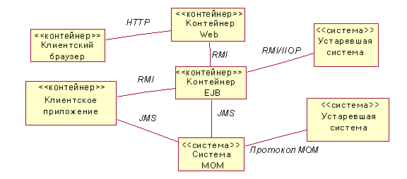
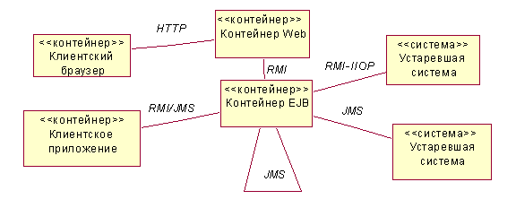

| Рекомендация: Описание архитектуры среды выполнения для приложений J2EE |
 |
|
| Связанные элементы |
|---|
ВведениеАрхитектура среды выполнения приложения описана в панели процессов, архитектурной панели, описывающей параллельные элементы системы. Эти разделы содержат конкретные указания по моделированию панели процессов для приложения J2EE. Дополнительная информация приведена в разделе Концепция: панель процессов. Моделирование панели процессовКомпоненты J2EE (см. раздел Концепция: обзор J2EE: компоненты J2EE) развертываются в средах, называемых контейнерами. Описание различных типов контейнеров J2EE приведено в разделе Концепция: обзор J2EE: компоненты J2EE. Каждый контейнер - это параллельный элемент, поэтому он должен быть показан в панели процессов архитектуры. Другие важные параллельные элементы, обычно показанные в панели процессов высокого уровня, - это внешние системы. Ниже приведена типичная диаграмма панели процессов высокого уровня для приложения J2EE.  В настоящем примере будет представлено промежуточное программное обеспечение, ориентированное на работу с сообщениями (MOM), конкретного вендора, а также конкретные устаревшие системы и клиенты приложения. Однако контейнер Web и контейнер EJB - это стандартные контейнеры, которые показаны во всех панелях процессов J2EE. Заметьте, что на этой диаграмме не отображено физическое распределение этих систем по узлам аппаратного обеспечения. Оно показано в модели развертывания (см. раздел Технология: описание распределения приложений J2EE). В этом примере показаны выбранные механизмы межпроцессной связи, применяемые контейнерами. J2EE предоставляет конкретные механизмы межпроцессной связи. Они перечислены ниже:
При создании панели процессов нужно, в частности, решить, когда следует применять JMS или RMI (или RMI-IIOP). В этом примере приложение-клиент, контейнер EJB и другая устаревшая система обмениваются информацией посредством сообщений. Однако не совсем ясно, между какими именно элементами осуществляется связь. Для устранения неоднозначности попробуйте удалить систему MOM с диаграммы и отобразить JMS как связь между элементами, обменивающимися информацией посредством сообщений. Другая неоднозначность: неясно, обмениваются ли объекты EJB информацией между собой посредством сообщений. Это можно выяснить, отобразив связь JMS контейнера EJB с самим собой. Окончательный вид диаграммы будет следующим:  Панель процессов, однако, содержит не только контейнеры и системы высокого уровня. В ней также показан параллелизм в этих контейнерах и системах. Панель процессом должна идентифицировать и моделировать следующие типы активных классов.
При использовании JMS вы можете связать поставщики и приемники сообщений напрямую или смоделировать взаимосвязь более точно, смоделировав темы и очереди.
Синхронная и асинхронная связь между элементами проектирования отражена на диаграммах взаимодействия. С помощью этих
диаграмм можно также анализировать параллельное изменение производительности и логических проблем. В частности,
архитектор программного обеспечения может получить информацию о частой передаче сообщений или передаче больших объектов
данных по сети. На основе этой информации архитектор может заново спроектировать интерфейсы или перераспределить
элементы проектирования между управляющими нитями, между серверами или между клиентом и сервером. Заметьте, что в контейнере EJB нитями и процессами управляет контейнер EJB - сами объекты EJB не могут ни создавать нити, ни управлять ими. С логической точки зрения, каждый объект EJB следует рассматривать как активный класс, однако, поскольку вызовы сеансовых и сущностных объектов EJB - это синхронные блокирующие вызовы, эти объекты, как правило, не моделируются как активные классы. Панель процессов для контейнера EJB, вообще говоря, ограничена одним механизмом параллелизма - JMS с управляемыми сообщениями объектами EJB JMS. Несмотря на то, что сеансовые и сущностные объекты EJB обычно не моделируются как активные классы, в некоторых случаях им приходится работать параллельно - например, когда один объект EJB считывает информацию из базы данных, а другой - записывает в нее. Эти проблемы решаются с помощью транзакций. Подход к применению транзакций должен быть задокументирован в указаниях по работе с проектом. Выделение элементов проектирования активным классамв разделе Задача: описать архитектуру среды выполнения указывается, зачем элементы проектирования необходимо выделять процессам и нитям. В приложении J2EE все Web-компоненты выделяются контейнеру Web, а все объекты EJB - контейнеру EJB. Эта простое правило избавляет от необходимости моделировать это выделение. Если, однако, проект включает дополнительные параллельные процессы (например, два различных приложения-клиента), то может быть полезно указать, какие элементы проектирования будут выполняться в каждом приложении. Для нитей Java, управляемых сообщениями объектов EJB и тем и очередей JMS более сложной проблемой является организация их взаимодействия во избежание тупиковых ситуаций, несогласованных данных и т.п. Лучше всего ознакомиться с этим вопросом, изучив реализации use-case, в которых участвуют эти элементы. Другие возможности моделированияИз-за сходства между панелью процессов и панелью развертывания диаграммы высокого уровня для этих панелей часто объединяются. Кроме того, поскольку каждый контейнер J2EE - это не только процесс, но и среда выполнения, его можно моделировать как "логический узел", а не как активный класс. |
© Copyright IBM Corp. 1987, 2006. Все права защищены.. |